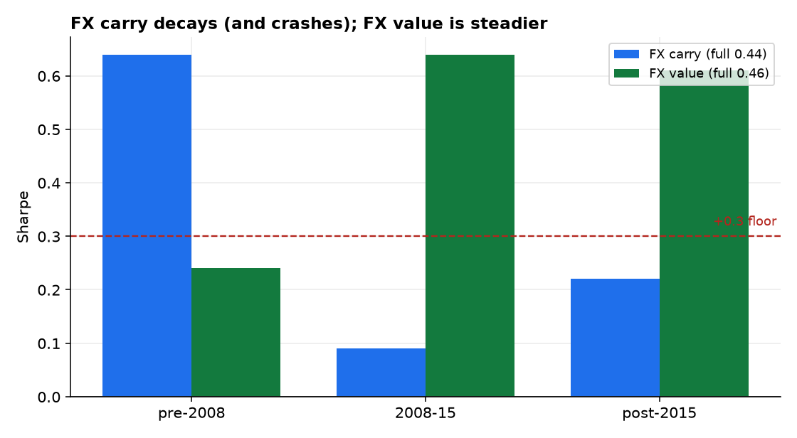
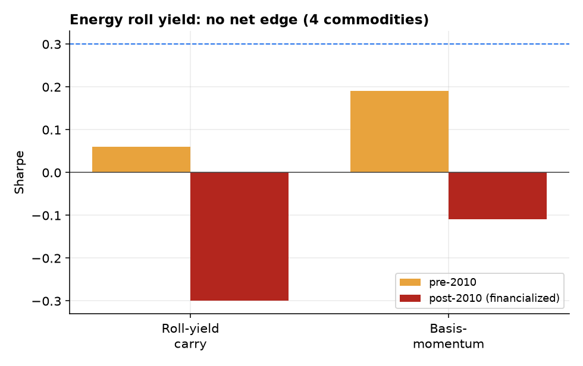
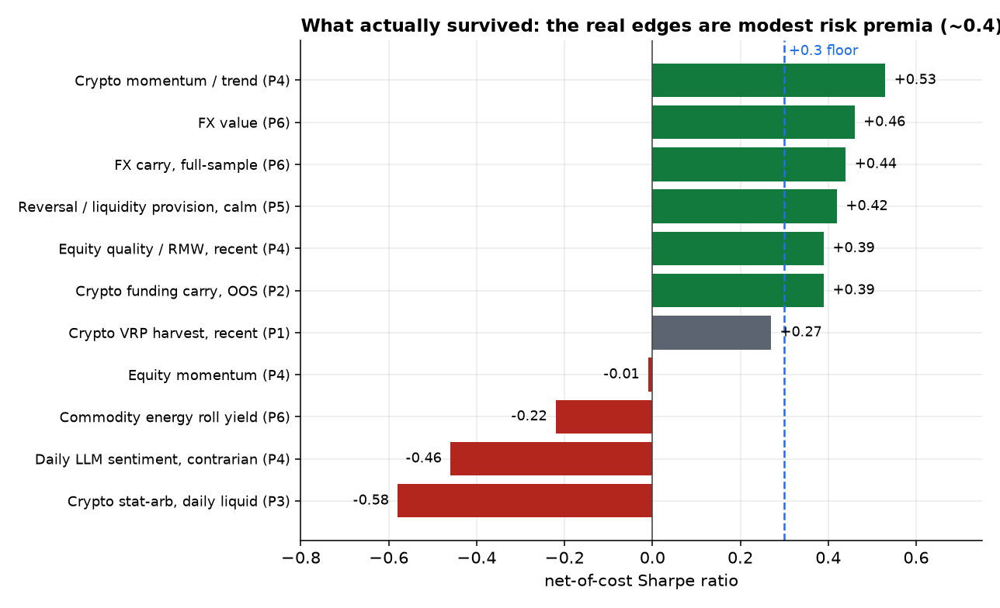

FX carry and commodity roll yield are the most-documented anomalies in finance, so they make a fitting finale. On newly-sourced free data — G10 currencies (1971–2026) and EIA energy-futures term structure (WTI, natural gas, heating oil, RBOB; 2004–2024) — we find them real but thin. FX carry earns a full-sample Sharpe of 0.44 but decays from 0.64 pre-2008 to ~0.2 since, with the negative skew of the carry-crash; FX value (real-exchange-rate reversion) is steadier at 0.46 and, unusually, stronger post-2008. Energy roll yield and basis-momentum net to roughly zero (−0.22 and −0.06) once the term structure is constructed correctly — and getting that construction wrong (a naive spliced front-contract series) produced a spurious −1.57 Sharpe, a live demonstration of the paper's own warning. None of these is a standalone edge; they are diversified-book ingredients at small weight, around the ~0.41 net Sharpe of AQR's live multi-style fund. We close by tallying every edge tested across the six-paper program: the handful that survive net of costs — crypto trend, FX value and carry, the liquidity-provision premium, crypto funding carry, equity quality — cluster modestly around a 0.4 Sharpe, just above our floor. The spectacular alphas of the backtests were, without exception, artifacts. The durable edges are modest risk premia, and the real alpha was the rigor that told them apart.
The carry trade — earn the yield differential and hope the exchange rate or futures curve doesn't move against you — is the oldest and best-documented cross-asset anomaly [1][2]. If anything in this series should be a clean, durable premium, it is this. We test FX carry and value (G10) and commodity roll yield and basis-momentum (energy), on free data, net of costs, with explicit attention to the two things that kill these trades: crash risk (carry's fat left tail) and post-financialization decay. Pre-registered:
FX: G10 spot and 3-month rate differentials vs USD (FRED), real effective exchange rates (BIS), and CFTC positioning — monthly, 1971–2026. Commodities: EIA daily settlement prices for the front-through-fourth contract of WTI, Henry Hub gas, NY Harbor heating oil, and RBOB gasoline (2004–2024) — a genuine multi-contract energy curve, the gap that no free continuous-futures feed could fill. Signals are lagged one month before being applied to the next month's return. A construction caveat we turned into a result: a futures “return” naively computed from the spliced front-contract series (C1ₜ/C1ₜ₋₁) injects the monthly roll with the wrong sign and produced a spurious −1.57 Sharpe; the correct roll-adjusted return tracks the held contract (the second-nearest last month is the front this month, $\log(C1_t/C2_{t-1})$). The roll method is the signal — exactly as the literature warns.
FX carry sorts currencies on the rate differential (long the top three, short the bottom three, dollar-neutral, monthly, net 5 bp); FX value sorts on REER deviation. The monthly excess return of holding a foreign currency is the interest differential plus its appreciation. Commodity roll yield sorts the four energy futures on $\log(C1/C2)$ (backwardation vs contango); basis-momentum on the front-minus-back 12-month return; both traded long-short on the roll-adjusted front return, net 10 bp. Benchmarks: the +0.3 mean-reversion floor and AQR's QSPIX ~0.41 live multi-style net Sharpe as the realistic professional ceiling.
FX carry is real but fading. Its full-sample Sharpe is 0.44, but it fell from 0.64 before 2008 to 0.09 (2008–15) and 0.22 since (Figure 1), carrying the negative skew (−0.16) that is the carry trade's signature — long stretches of yield punctuated by violent unwinds. FX value, by contrast, earns 0.46 with positive skew and is actually stronger post-2008 (0.61); it is the more robust and more diversifying of the two. Both, however, sit at or below the ~0.41 a live multi-style fund delivers — modest premia, not standalone edges.

On the four energy curves, neither roll-yield carry (Sharpe −0.22) nor basis-momentum (−0.06) clears zero net of costs; both were mildly positive pre-2010 and turned negative post-2010 (Figure 2), the financialization decay the literature documents for commodity-curve strategies. The thin four-commodity cross-section and realistic costs leave nothing to harvest in the most liquid, free-data corner of the complex. (The broad cross-commodity universe, where basis-momentum is reported to survive, needs a paid multi-contract feed — flagged as the boundary of this result.)

This is the sixth and final paper, so we put every edge tested across the program on one axis (Figure 3): net-of-cost Sharpe, against the +0.3 floor. The pattern is the thesis. The edges that survive — crypto trend, FX value, FX carry, the liquidity-provision premium, crypto funding carry, equity quality — form a tight cluster between roughly 0.39 and 0.53, modest premia that barely clear the floor. The edges that die — equity momentum, commodity roll yield, daily sentiment, crypto statistical arbitrage, and (not shown, from prior in-house work) directional ML and RL — sit at or well below zero. Nothing approaches the spectacular Sharpes that the raw backtests advertised; every one of those was an artifact of selection, smoothness, stale prices, decay, or cost-blindness.

We set out to hunt for harvestable alpha across crypto, equities, FX, commodities, and volatility, and to publish the results honestly — negatives included. Six papers later, the findings rhyme:
The durable edges are modest risk premia — compensation for providing liquidity, insurance, or financing — clustered around a 0.4 Sharpe. Every spectacular backtest alpha we examined was an artifact. The real alpha was the rigor that told the two apart.
Three lessons generalize. First, cost and structure realism is decisive — half-spreads, turnover, queue position, the roll method, options execution: in market after market, the honest cost model is what separated the one real edge from the many fake ones. Second, the survivors share a form: they pay you for providing something the market needs — liquidity (reversal), insurance (the volatility premium), financing (carry) — not for forecasting direction, which failed everywhere we looked. Third, modest is the ceiling: a small, honest participant should expect a diversified book of these premia to deliver something like the ~0.4 net Sharpe a live multi-style fund earns — not the double-digit Sharpes of the literature, which do not survive contact with costs, out-of-sample data, or a second look. That is not a disappointing answer. It is the correct one, and arriving at it honestly — rather than deploying capital on an artifact — is the whole point.
Commodities are energy-only. Four liquid energy curves are a thin cross-section; the broad commodity universe (metals, ags, softs) where basis-momentum is reported to survive needs a paid multi-contract feed, and the EIA series end in 2024. FX forwards. We proxy carry with the rate differential rather than traded forward points (free forwards are scarce; covered-interest parity broke down post-2008), and use EM-free G10 — the higher-carry, higher-crash EM currencies would sharpen both the premium and its tail. Construction. The roll-adjusted return is the standard second-to-first approximation; a true contract-level roll calendar would refine it. Program-wide: the natural next step is portfolio construction — combining the half-dozen surviving ~0.4-Sharpe premia (diversifying across crypto trend, FX value/carry, quality, liquidity provision, funding carry) into a single vol-targeted book, and asking whether the diversified whole clears, and stays above, the QSPIX-like ceiling net of all costs. That — not another lone-anomaly hunt — is where the modest, real edges might add up to something worth trading.